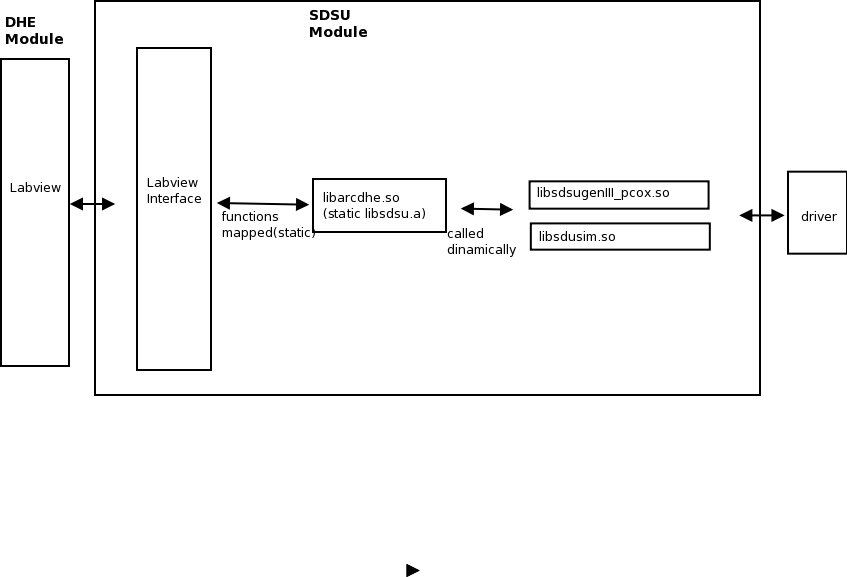

DHE Modules - SDSU
Introduction
The
panview SDSU module allows a complete handling of SDSU-Gen III
controller. This includes on the fly handling of the bias voltages anc
clock level, memory (register and status) manipulation,etc. It supports
NIR and optical (visible) detectors. The module itself suppoorts
binning and ROI, but of course the specific DSP code running on the
controller must support it, too.
Regarding the link media, the current version supprts the PCI (PCIX) version only (PCIe not yet added) and simulation mode.
Basic Architecture
The atchitecture of the SDSU module under panview can be seen in Figure 1. The generic DHE module calls the specific labview interface, which in turn have mapped the API C functions from library libarDHE.so. This is a shared object linked to libsdsd.a, that has the actual calls for the specific hardware. In this case the only real link supprted is pcix, and the only controller from SDSU supported is genIII, so the only dynamic library taking to real hardware is libsdsugenIII_pcix.so. If simulation mode is desired, then it call instead libsdsusim.so,
which generate identical responses to those of the controller (it can
also take images with artifitial data). When running in simulation
nobody from the upper layers knows it, meaning that the full software
can be tested in sim mode.

Figure 1: panview SDSU module architecture
- Driver installation required. Please follow this instructions in order to have
the SDSU unix driver installed.
Configuration files
when
the system starts, the DHE generic module is asked to intialize. It
looks into its own config file (MOD_DHE.cfg), and starts up the
indicated submodule. IN the case of the SDSU hatdware, the entry in
MOD_DHE.cfg should say
[INIT]
module=SDSU
file=DETECTOR/dhe.conf
So
now the file dhe.conf (in the example). This file is specific for each
hardware submodule. In the case of the SDSU controller, this file
is explained in the link below
- Initialization file (INIT)
Regarding
the definitoon for testpoints -points that will be read periodically in
order to be logged, generate alarms, etc-, the entry in the main
MOD_DHE.cfg file should look like this:
[TP]
tpfile=DHE_TP.cfg
algorfile=ALGORS.list
For the SDSU controller, the structure of this file is explained in the lnk below:
- Testpoint Definitions file (TP)
Regarding
the definition for the DACs, so the user can modify the values by name,
and in volts rather than ADU (or both), the entry in MOD_DHE.cg should
look like this:
[DACS]
file=DHE_DACS.cfg
For the SDSU controller, the structure of this file is as follow:
- DACS definition file (DAC)
Regarding information to be shared (written) to the fits headers, the entry in the MOD_DHE.cfg file should look like this:
[HDRINFO]
file=DHE_INFO.tpl
The structure fot this file for the SDSU controller is as follow:
- Header Template information file
(HDRINFO)
Regarding
the definitions for register operation (mostly used for more complex
detectors, like H1RG and H2RG), the entry in MOD_DHE.cfg should be like:
[REGS]
file=DHE_REG.cfg
The structure for this file for the SDSU controller is explained in the link below
- REGISTERS definition file (REGS)
There
is also another optional file used to transtale netween high level commands and
DSP three letter commands, and/or memory locations for certain
operations. This file should be specified in the main INIT file under the MISC entry, transfile entry.
The structure of this file is as follows:
- SDSU translations file
Command Set
- Supported commands:
* supports the standard
DHE command list.
- support DACs: yes
- support TP: yes
- support REGS: yes
* see the specific SDSU
comand list